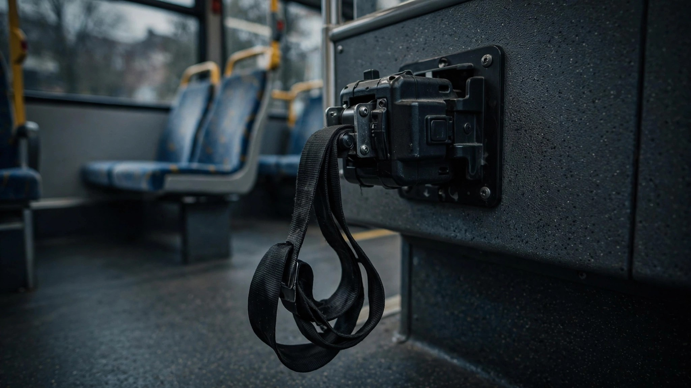

One Retractor Broke. Ten Manufacturers Recalled. Nobody Noticed.

Between December 2025 and June 2026, at least ten vehicle manufacturers issued recalls for the same wheelchair restraint retractor made by a single company called Q'Straint. The retractors, models QRT-MAX and QRT-DELUXE, are bolted into school buses, transit buses, and wheelchair-accessible vans built by BraunAbility, Thomas Built, IC Bus, Blue Bird, Forest River, Micro Bird, Endera Motors, ARBOC, Turtle Top, and Vantage Mobility International, covering more than 4,000 vehicles across three countries.[1][2][3]
The failure mode is brutally simple: friction between internal parts jams the auto-release mechanism, and the retractor never locks.[4] A wheelchair restraint that cannot lock is not a wheelchair restraint. In a sudden stop or a collision, the chair rolls freely, and the person sitting in it has no airbag, frequently no ability to brace with their limbs, and whatever dignity the Americans with Disabilities Act promised them in transit.
Q'Straint traced the defect to units manufactured between June 16 and September 10, 2025, and the UK’s product safety authority posted a recall by October.[5] BraunAbility says it was notified October 24.[4] But the American NHTSA filings did not start appearing until December 2025 and kept trickling in through June 2026, each recall filed under its own campaign number by a different vehicle manufacturer: 627 IC Bus school buses in one filing, 1,571 BraunAbility Pacifica vans in another, 929 Micro Bird buses in March, six Turtle Tops in May. No federal notice connected them to a common supplier, because the recall system indexes by vehicle brand, not by the Tier 2 component maker whose retractor sits under the floor of every accessible vehicle on the continent.
This is what a supply-chain monopoly looks like when it breaks. Q'Straint’s QRT retractors are the industry-standard wheelchair tiedown for North American accessible vehicles, and BraunAbility, the continent’s largest wheelchair van converter, is a Q'Straint sister company.[4] One dominant source shipping three months of defective product does not produce one recall. It produces a cascade that the federal system was never designed to surface, because nobody at NHTSA is aggregating by component supplier the way they aggregate by make and model when a Takata airbag inflator starts sending shrapnel through dashboards.
FARS cannot tell you how many wheelchair users have died in crashes where their retractor failed, because the fatality database does not separately track wheelchair occupant deaths and includes no field for securement status.[6] We count every unbelted pickup occupant who exits through a windshield. We do not count the wheelchair user whose retractor never engaged. If you wanted to design a data blind spot that guarantees a population stays invisible in the safety statistics, you could not improve on the current system.
What you should do: If someone in your life rides in a wheelchair-accessible vehicle built between 2021 and 2026, check the VIN at nhtsa.gov/recalls. For BraunAbility Pacifica vans, the campaign number is 26V296000. For transit or school buses, ask the fleet operator whether Q'Straint QRT-MAX or QRT-DELUXE retractors have been inspected. Until a fix is confirmed, do a pre-trip test: pull the strap fully out and let it retract. If it does not lock when you tug, do not ride in that position.
Sources & References
- NHTSA, multiple recall campaigns: 26V296000 (BraunAbility), 26V349000 (ARBOC), 26V348000 (IC Bus EVSB), and related campaigns Dec 2025–Jun 2026 for Q’Straint QRT retractors. nhtsa.gov/recalls
- Trucks, Parts, Service, “NHTSA commercial vehicle recalls for the week of Dec. 22, 2025” and “week of May 18, 2026.” truckpartsandservice.com
- Transport Canada, Recall 2026003, Vantage Mobility International wheelchair van conversions, Jan 2026. recalls-rappels.canada.ca
- MotorBiscuit, “Wheelchair Passenger Safety Risk Prompts Recall of BraunAbility Chrysler Pacifica Vans,” 2026. motorbiscuit.com
- UK Office for Product Safety and Standards, Recall 2510-0101, Q’Straint QRT-MAX and QRT-DELUXE wheelchair securement retractors, Oct 2025. assets.publishing.service.gov.uk
- NHTSA, Fatality Analysis Reporting System (FARS), 2014–2024. FARS crash reports do not include a dedicated field for wheelchair occupant securement status. nhtsa.gov